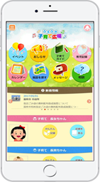

- 各位
- 2017年6月30日
会 社 名 株式会社カナミックネットワーク
代表者名 代表取締役社長 山本 拓真
(コード番号：3939 東証マザーズ)
山梨県笛吹市がカナミックネットワークの子育て支援システム
「ふえふき子育て広場」のアプリ配信を開始
山梨県笛吹市(市長 山下政樹)は、株式会社カナミックネットワーク(本社 東京都渋谷区、代表取締役社長 山本拓真、以下「当社」)が開発した子育て支援システム「ふえふき子育て広場」のスマートフォン向けアプリの配信を開始しました。
背景
笛吹市(人口70,228人※2017年5月末時点)では、若年層の転出や少子化による人口減少の克服が地方創生に向けた重要な柱となっており、「まち・ひと・しごと創生総合戦略」における子育て支援の一環として、当社のクラウドサービスを使った子育て支援システム「ふえふき子育て広場」を公式アプリとして導入しました。
導入にあたっては、地域子育て支援センターなど市内の関連施設からアイデアを集めたほか、市内で子育て中の保護者を対象にしたモニター調査などを実施しています。
「ふえふき子育て広場」について

「ふえふき子育て広場」は、子育て世帯と行政双方における子育ての課題を解消し、地域ぐるみの継続的なサポートを実現するためのクラウドサービスです。
予防接種や子育てイベント、医療機関の情報など、行政や参加団体が発信する情報をタイムリーに共有できる「情報配信機能」や、子育て中の母親・父親が、行政担当者や医療・保育分野の専門職に気軽に相談ができる「相談機能」、さらに子供の身長、体重などの成長グラフや食事、トイレ、睡眠といった日々の生活記録や写真などを記録・共有できる「子育て成長記録機能(電子母子手帳)」などが搭載されており、子育て世帯と行政担当者、それぞれのニーズに沿った設計となっています。
本アプリは、App StoreとGoogle Playのほか、笛吹市のサイト（http://www.city.fuefuki.yamanashi.jp/file/8/591961a562b74.pdf）からダウンロードできます。
カナミックネットワークの「多世代包括ケア」
当社は、子育て支援から介護まで、多世代にわたる課題を地域ぐるみで解決する「多世代包括ケア」の実現をクラウドサービスによってサポートしています。
子育て支援アプリは、クラウドを通じて、行政、医療機関、子育て関連施設などの子育て情報を提供し、地域全体で子育てを支えるサービスです。
また超高齢社会を支える地域包括ケアでは、患者・要介護者一人ひとりについて、多職種・他法人の連携を可能にする情報共有プラットフォームを提供しており、全国477地域（※2017年3月時点）で導入されているほか、東京大学高齢社会総合研究機構(IOG)と千葉県柏市が取り組んでいる地域包括ケアのモデル事業をはじめ、厚生労働省や総務省のモデル事業などで、数多く採用されています。
| 商号 | ： | 株式会社カナミックネットワーク (証券コード：3939) |
| 所在地 | ： |
〒150-6031 東京都渋谷区恵比寿4-20-3 恵比寿ガーデンプレイスタワー31階 |
| 設立 | ： | 平成12年(2000年)10月20日 |
| 資本金 | ： | 3億2,412万円 |
| 事業内容 | ： | 医療・介護・子育て分野におけるクラウドサービス提供事業 など |
| アドレス | ： | https://www.kanamic.net/ |
以 上
本件に関するお問い合わせ先
株式会社カナミックネットワーク 経営企画室 丸山
所在地 〒150-6031 東京都渋谷区恵比寿4-20-3
恵比寿ガーデンプレイスタワー31階
ＴＥＬ 03-5798-3955